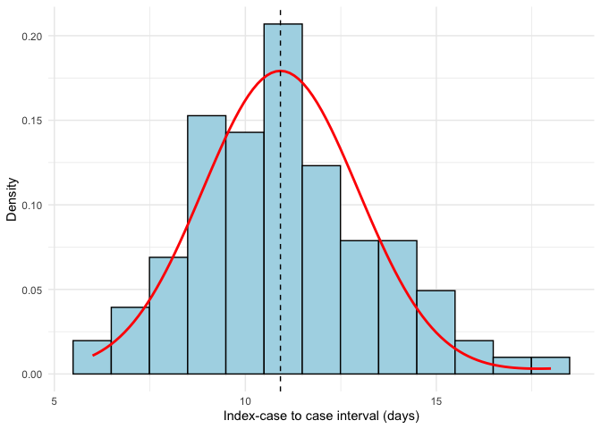
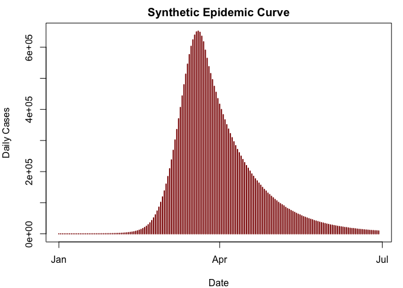
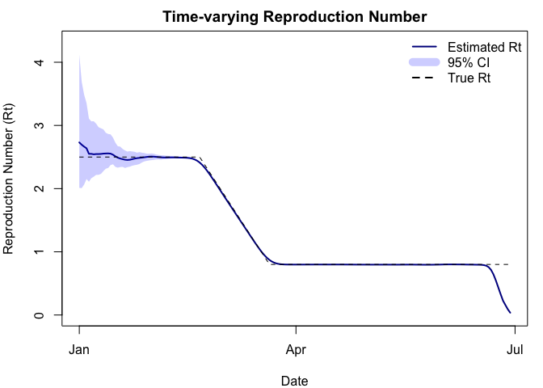

The mitey package is a lightweight package designed originally as a companion to the analyses presented by Ainslie et al. 2025 on scabies transmission. However, these methods are more widely applicable than in the context of scabies, thus the motivation behind creating the mitey package was twofold and also provides flexible, documented code for methods to estimate epidemiological quantities of interest.
Currently, mitey includes methods to estimate a) the mean and standard deviation of the serial interval distribution using a maximum likelihood framework developed by Vink et al. 2014 and b) the time-varying reproduction number using the method developed by Walling and Lipsitch 2007.
Estimating the serial interval
The method developed by Vink et al. uses data about the time of symptom onset with no precise information about transmission pairs and an assumed underlying serial interval distribution (either Gaussian or Gamma) to estimate the mean and standard deviation of the serial interval distribution. Briefly, the method involves calculating the index case-to-case (ICC) interval for each person, where the person with the earliest date of symptom onset will be considered the index case. The rest of the individuals will have an ICC interval calculated as the number of days between their symptom onset and the index case.
Installation
# install.packages("devtools")
devtools::install_github("kylieainslie/mitey")Example Usage
library(mitey)
#-----------------
# Serial Interval Estimation
#-----------------
icc_intervals <- c(rep(6,4),rep(7,8),rep(8,14),rep(9,31),rep(10,29),rep(11,42),rep(12,25),rep(13,16),rep(14,16), rep(15,10),rep(16,4),rep(17,2),rep(18,2))
# Estimate serial interval
si_results <- si_estim(icc_intervals)
si_results
#> $mean
#> [1] 10.91892
#>
#> $sd
#> [1] 2.036239
#>
#> $wts
#> [1] 3.625090e-02 9.146057e-01 3.012069e-16 4.913656e-02 7.797502e-22
#> [6] 6.801913e-06 6.863119e-28
# Plot fitted serial interval distribution
plot_si_fit(
dat = icc_intervals,
mean = si_results$mean[1],
sd = si_results$sd[1],
weights = c(si_results$wts[1],
si_results$wts[2] + si_results$wts[3],
si_results$wts[4] + si_results$wts[5],
si_results$wts[6] + si_results$wts[7]),
dist = "normal"
)
#-----------------
# Time-varying Reproduction Number Estimation
#-----------------
# Generate a synthetic epidemic using the generate_synthetic_epidemic function
set.seed(123)
true_r <- c(rep(2.5, 50), seq(2.5, 0.8, length.out = 30), rep(0.8, 100))
# Generate synthetic epidemic data
synthetic_data <- generate_synthetic_epidemic(
true_r = true_r, # Time-varying reproduction number
si_mean = 5.2, # Mean serial interval (days)
si_sd = 1.72, # SD of serial interval
si_dist = "gamma", # Distribution type
initial_cases = 10 # Initial number of cases
)
incidence <- synthetic_data$incidence
dates <- synthetic_data$date
# Estimate time-varying reproduction number
results <- wallinga_lipsitch(
incidence = incidence,
dates = dates,
si_mean = 5.2, # mean serial interval in days
si_sd = 1.72, # serial interval SD
si_dist = "gamma", # serial interval distribution
smoothing = 7, # 7-day smoothing window
bootstrap = TRUE, # calculate bootstrap confidence intervals
n_bootstrap = 100, # number of bootstrap samples
conf_level = 0.95 # 95% confidence intervals
)
head(results)
#> date incidence R R_corrected R_lower R_upper R_corrected_lower
#> 1 2023-01-01 10 2.731039 2.731039 2.011146 4.120939 2.011146
#> 2 2023-01-02 0 2.694590 2.694590 2.008012 3.692239 2.008012
#> 3 2023-01-03 1 2.664286 2.664286 2.064334 3.486878 2.064334
#> 4 2023-01-04 3 2.638675 2.638675 2.151772 3.354107 2.151772
#> 5 2023-01-05 9 2.550425 2.550425 2.108557 3.108038 2.108557
#> 6 2023-01-06 11 2.550200 2.550200 2.165532 3.064228 2.165532
#> R_corrected_upper
#> 1 4.120939
#> 2 3.692239
#> 3 3.486878
#> 4 3.354107
#> 5 3.108038
#> 6 3.064228
Main Functions
| Function | Description |
|---|---|
si_estim() |
Estimates the mean and standard deviation of the serial interval distribution |
plot_si_fit() |
Plots the fitted serial interval distribution |
wallinga_lipsitch() |
Estimates the time-varying reproduction number using the Wallinga & Lipsitch method |
generate_synthetic_epidemic() |
Generates a synthetic epidemic curve with specified parameters for testing and simulation |
Vignettes
A quick start guide showing examples of how to estimate the serial interval and time-varying reproduction number can be found here.
A script that reproduces the results from Ainslie et al. 2025 can be found here.
Validation of the method used to estimate the mean and standard deviation of the serial interval proposed by Vink et al. 2014 can be found here.
Validation of the method used to estimate the time-varying reproduction number proposed by Wallinga and Lipsitch 2007 can be found here.
Data
Several data files are stored in the repo so that the results presented in Ainslie et al. 2025 are reproducible. Data files are stored in inst/extdata/data/. Below is a brief description of the different files.
-
si_data.rds- Description: Data on date of symptom onset for scabies outbreaks described by Kaburi et al., Akunzirwe et al., Tjon-Kon-Fat et al., and Ariza et al. For all outbreaks except Kaburi et al. the raw data was not available, thus the date of symptom onset data had to be reconstructed using the epidemic curve provided in the manuscript. The original data from Kaburi et al. is also available in the
datadirectory (Kaburi_et_al_data_scabies.xlsx). - Source:
- Description: Data on date of symptom onset for scabies outbreaks described by Kaburi et al., Akunzirwe et al., Tjon-Kon-Fat et al., and Ariza et al. For all outbreaks except Kaburi et al. the raw data was not available, thus the date of symptom onset data had to be reconstructed using the epidemic curve provided in the manuscript. The original data from Kaburi et al. is also available in the
-
scabies_data_yearly.xlsx- Description: Annual scabies incidence per 1000 people in the Netherlands from 2011-2023.
- Source: Nivel
-
scabies_data_consultation_weekly.xslx- Description: Weekly numbers of persons consulting for scabies (per 100,000 people) from 2011 to 2023 in the Neltherlands as diagnosed by general practitioners (GPs). Note: Individuals in institutions (e.g., care homes, prisons) usually have their own health care provider and are generally not taken into account in GP registrations.
- Source: Nivel
License
This package is distributed under the European Union Public License (EUPL) v1.2. See LICENSE file for details.
Citation
If you use mitey in your research, please cite:
Ainslie, K. (2025). mitey: Toolkit to Estimate Infectious Disease Dynamics Parameters. R package version 0.1.0. https://github.com/kylieainslie/miteyAnd the original methodological papers:
- Vink et al. (2014). Serial intervals of respiratory infectious diseases: A systematic review and analysis. American Journal of Epidemiology, 180(9), 865-875.
- Wallinga, J., & Lipsitch, M. (2007). How generation intervals shape the relationship between growth rates and reproductive numbers. Proceedings of the Royal Society B: Biological Sciences, 274(1609), 599-604.